El capitán Carlos Amador ha desaparecido de su camarote durante la noche. Con él, han desaparecido las claves de navegación del Santa María la Blanca. El barco navega sin rumbo hacia la Gran Tormenta del Atlántico Norte.
Encontramos su última transmisión de radio, fragmentada e incompleta. También hallamos este cuaderno de bitácora, repleto de mensajes cifrados y pistas que solo un verdadero marino puede descifrar.
Tenéis exactamente 40 minutos antes de que el barco entre en aguas imposibles. Debéis resolver las ocho pruebas del cuaderno:
☑ Prueba 1 — Banderas náuticas
☑ Prueba 2 — Botellas con etiquetas
☑ Prueba 3 — Cabo con nudos
☑ Prueba 4 — Ruta de la brújula
☑ Prueba 5 — Mapa con coordenadas
☑ Prueba 6 — Telégrafo en Morse
☑ Prueba 7 — Banderines de colores
☑ Prueba 8 — Rueda del timonel ☑ Prueba 8 — Diario cifrado
☑ Prueba 9 — Rueda del timonel
☑ Prueba 10 — Señales de linterna
📖 Las pistas están en las pestañas P1–P8 de este cuaderno. Introducid cada código en los candados digitales de la misión (⚓ Volver a la misión).
— Bitácora del Primer Oficial, Raquel Cuesta
II
PRUEBA 1 — SEÑALES DE CUBIERTA
📖 Pista visual en esta página — consultad la ilustración de abajo.
El capitán Salamanca era fanático del lenguaje náutico. Antes de desaparecer, dejó registradas cinco banderas con un mensaje de socorro. No lo escribió en claro: lo cifró usando el Código Internacional de Señales.
Mensaje del capitán — cinco banderas en orden (izquierda → derecha):
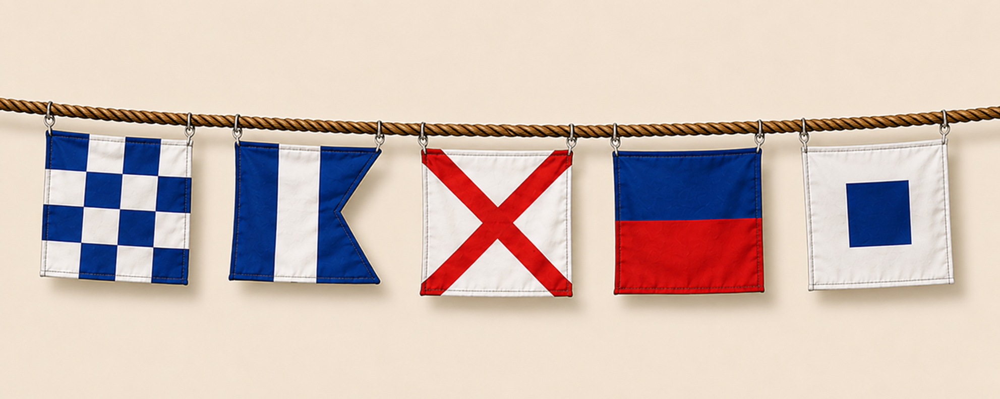
Vuestro encargo
Consultad las 5 banderas de la primera ilustración, de izquierda a derecha.
Usad la tabla del alfabeto náutico para identificar cada letra.
Formad la palabra e introducidla en el candado digital de la misión (texto, 5 letras).
ALFABETO NÁUTICO COMPLETO
Código Internacional de Señales: correspondencia de letras (A–Z) y números (0–9) con cada bandera.
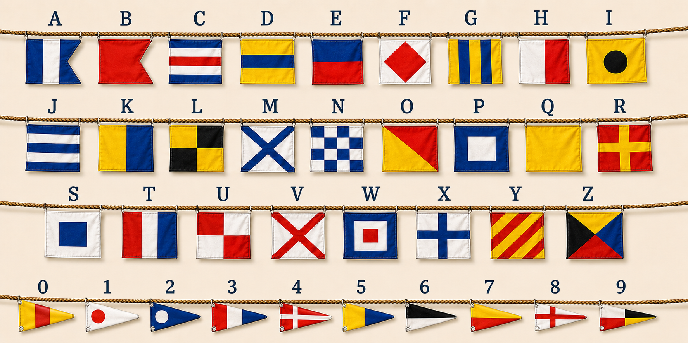
⚓ Este cuaderno es solo de consulta. Las soluciones se introducen en los candados de la misión.
1
PRUEBA 2 — EL MENSAJE DE LAS BOTELLAS
📖 Pista visual en esta página — consultad la ilustración de abajo.
El capitán colgó nueve botellas con etiquetas numeradas. El mensaje solo está en los colores del colegio: el carmesí del escudo y el azul marino de la vela. El resto de frascos (violeta, verde, naranja, amarillo…) no cuentan.
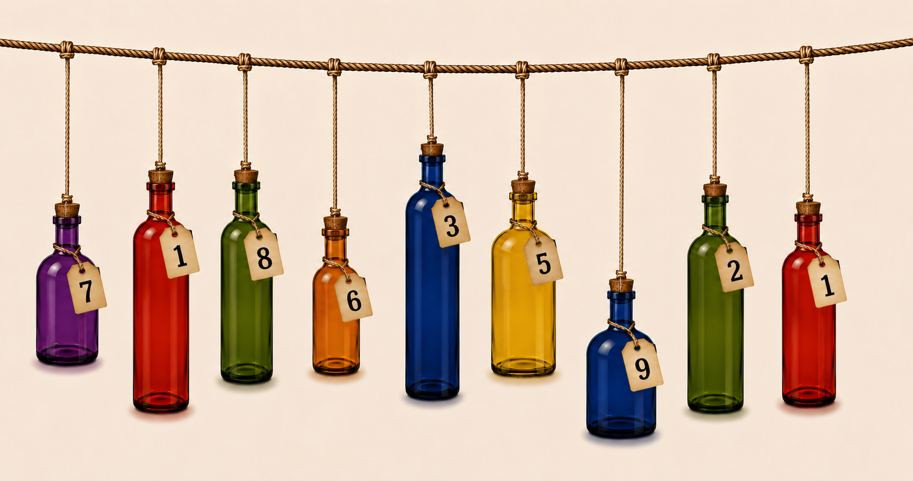
Instrucciones
1. Buscad en la ilustración las botellas del carmesí del escudo y las del azul marino de la vela.
2. En cada tono del colegio, comparad la altura de los frascos: ¿cuál cuelga más alto? ¿cuál es el más pequeño?
3. Leed el número de la etiqueta de cada una (las cuatro botellas que importan).
4. Formad con esos cuatro números el código de 4 cifras e introducidlo en el candado digital de la misión.
⚓ Este cuaderno es solo de consulta. El código se introduce en los candados de la misión.
2
PRUEBA 3 — EL CABO DE LOS NUDOS
📖 Pista visual en esta página — driza y cuadro de referencia.
El contramaestre izó una driza con seis banderines, cada uno con un nudo distinto. En el cuaderno hay un cuadro de referencia: cada tipo de nudo lleva una operación (+, − o ×). Hay que descifrar la secuencia de izquierda a derecha.
La driza del contramaestre (de izquierda a derecha):
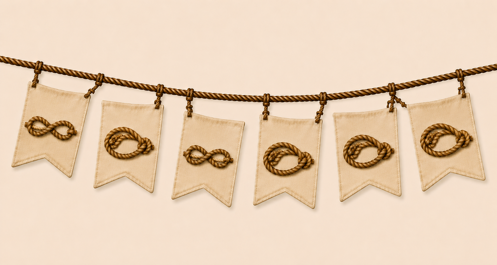
CUADRO DE REFERENCIA
Comparad cada nudo de la driza con el cuadro y leed la operación de su etiqueta.
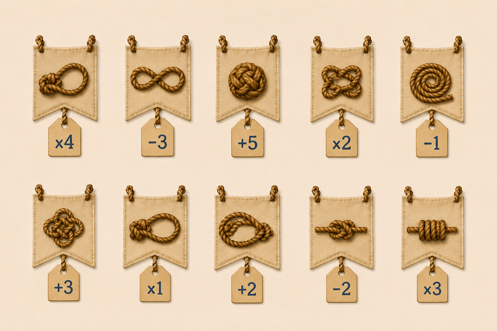
Instrucciones
1. Mirad los seis banderines de la driza, en orden de izquierda a derecha.
2. Identificad cada nudo en el cuadro de referencia y anotad su operación (×4, −3, +5…).
3. Partid del número 10 (tradición de los marinos del colegio).
4. Aplicad las seis operaciones, una tras otra, en ese orden.
5. El resultado final (dos cifras) es el código del candado digital.
⚓ Este cuaderno es solo de consulta. El código se introduce en los candados de la misión.
3
PRUEBA 4 — LA RUTA DE LA BRÚJULA
El capitán dejó escrita una ruta de navegación. Usad la cuadrícula, partid del ancla y seguid cada tramo en orden. Al terminar, decidid en qué dirección queda el barco respecto al punto de partida.
Ruta del capitán
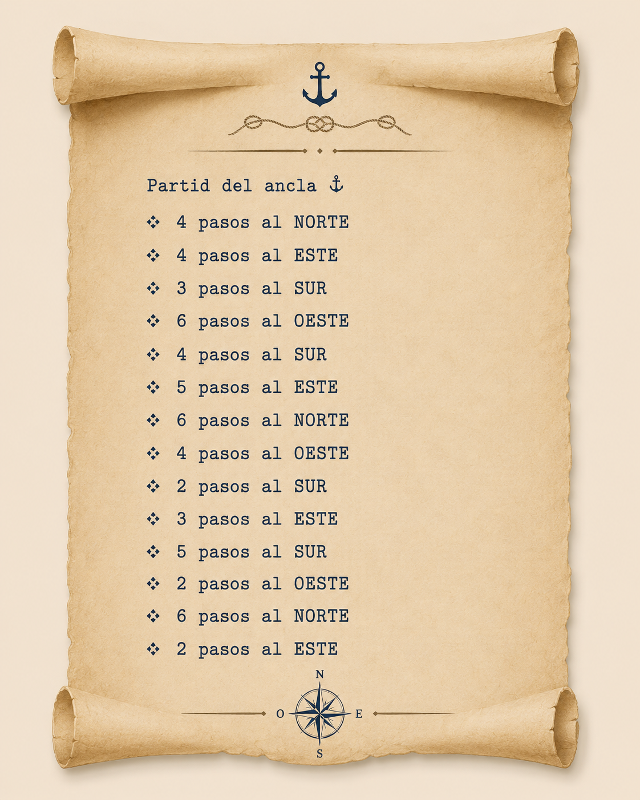
Leed la ruta en el pergamino y seguid cada tramo en orden, desde el ancla ⚓.
Marcad el recorrido en la cuadrícula. Norte arriba · Este a la derecha · Sur abajo · Oeste a la izquierda. El ancla del centro es el origen.
¿En qué dirección quedáis respecto al inicio?
⚓ La dirección final se introduce en el candado digital de la misión (dirección cardinal).
4
PRUEBA 5 — LAS ESCALAS SECRETAS
El capitán dejó tres coordenadas en un pergamino y un mapa del mundo con letras marcadas. Localizad cada punto en el mapa, anotad la letra y ordenadlas de mayor a menor latitud (de norte a sur).
Coordenadas del capitán
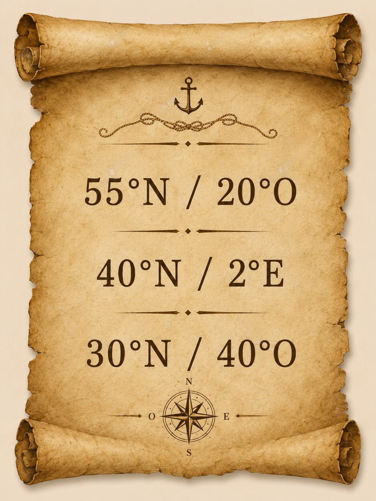
Buscad cada coordenada en el mapa de abajo y anotad la letra que corresponde.
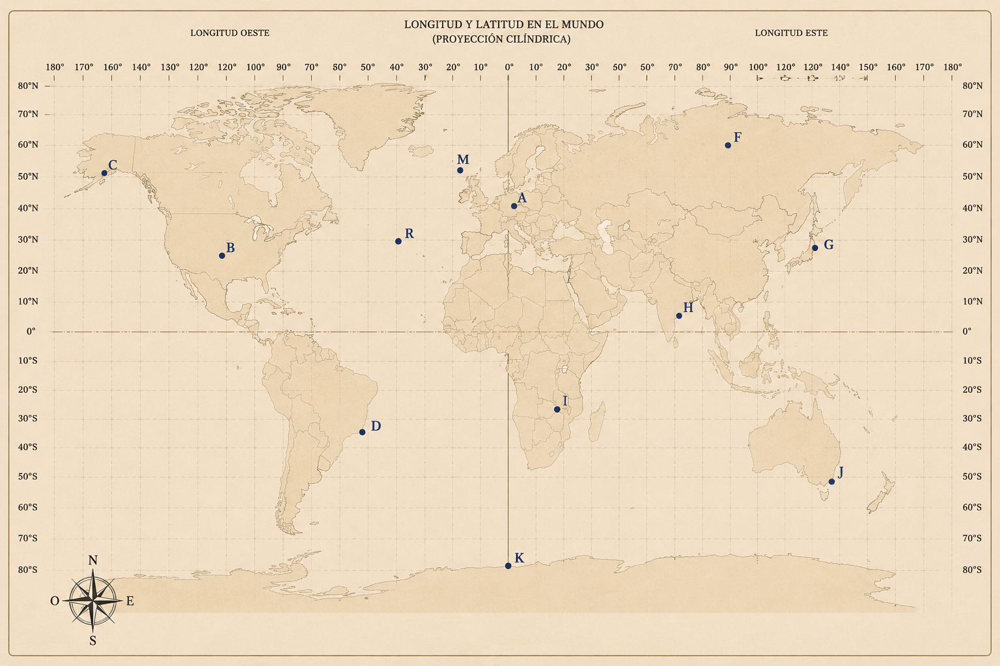
Longitud Oeste a la izquierda del meridiano 0° · Longitud Este a la derecha. Ordenad las tres letras por latitud: 55°N → 40°N → 30°N.
⚓ Ordenad las letras de mayor a menor latitud (55°N → 40°N → 30°N) e introducid la palabra en el candado digital (texto, 3 letras).
5
PRUEBA 6 — EL TELÉGRAFO DEL CAPITÁN
El radio-operador interceptó un mensaje del capitán en código Morse. El mensaje está en el candado digital de la misión; usad la tabla de abajo para descifrarlo.
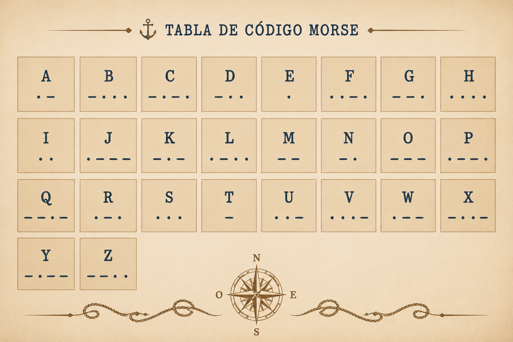
Cada grupo del mensaje (separado por espacio) es una letra.
⚓ Descifrad el mensaje Morse del candado con esta tabla e introducid la palabra (texto, 7 letras).
6
PRUEBA 7 — LOS BANDERINES DEL MÁSTIL
Los banderines de la driza están en el candado digital de la misión. Aquí tenéis el código de colores. Contad de izquierda a derecha y usad solo las posiciones impares.
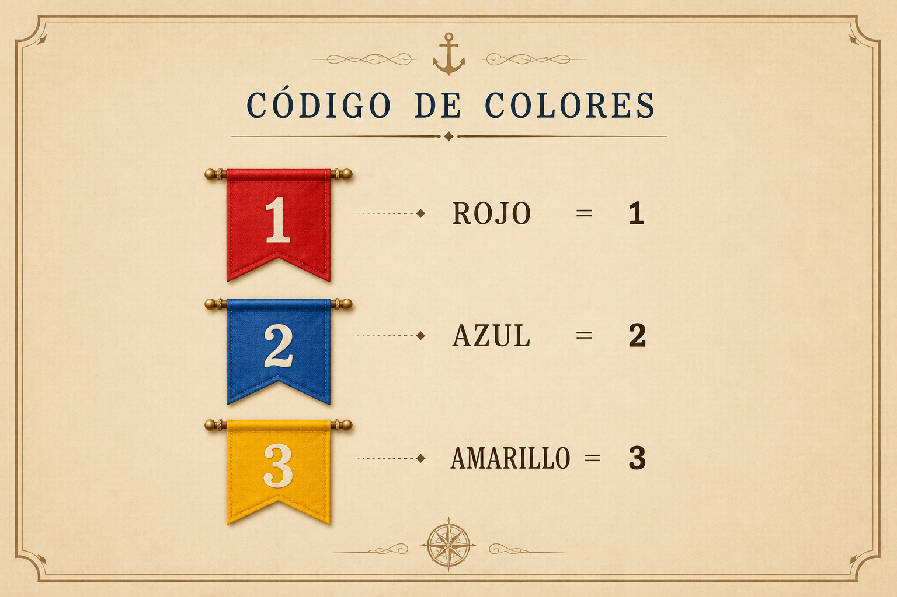
Rojo = 1 · Azul = 2 · Amarillo = 3
Instrucciones
Hay 9 banderines en la driza del candado, numerados del 1 al 9 (izquierda → derecha).
Tomad SOLO los de posición IMPAR (1º, 3º, 5º, 7º, 9º).
Traducid cada color con el código de arriba y escribid las 5 cifras en orden.
⚓ Posiciones impares (1, 3, 5, 7, 9): traducid color a número e introducid las 5 cifras en el candado digital de la misión.
7
PRUEBA 8 — EL DIARIO SECRETO
El capitán cifró tres palabras en su diario usando métodos distintos. Cada palabra da un número (cuenta sus letras). Los tres números forman el código.
⬛ FRAGMENTO A — Cifrado Pigpen (cuenta las letras de la respuesta)
Referencia Pigpen: La cuadrícula divide el alfabeto en sectores. Cada símbolo es la forma del sector que contiene la letra.
🔢 FRAGMENTO B — Código ASCII decimal
80 85 69 82 84 79
Referencia: A=65, B=66, C=67... Z=90 (mayúsculas)
📡 FRAGMENTO C — Código Morse
· · · · — · — ·
⚓ Contad las letras de cada palabra descifrada (A, B, C) y formad el código de 3 cifras en el candado digital.
8
PRUEBA 8 — LA RUEDA DEL TIMONEL
El timonel dejó un mensaje cifrado con ROT13 (cada letra se desplaza 13 posiciones en el alfabeto). El mensaje está en el candado digital; aquí tenéis la clave del método.
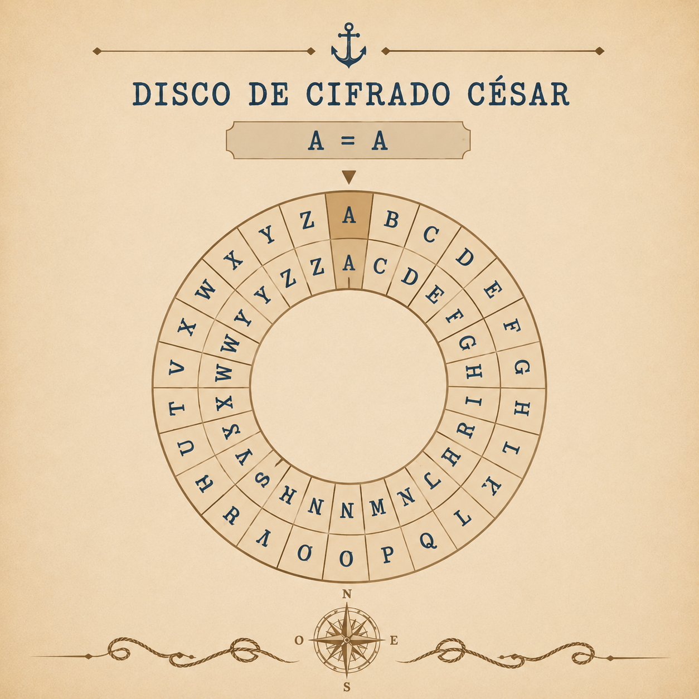
Aplicad ROT13 letra a letra al mensaje del candado. Escribid el resultado en mayúsculas, sin espacios (6 letras).
⚓ Descifrad el mensaje ROT13 del candado digital e introducid la palabra (texto, 6 letras).
⭐ Esta es la última prueba activa. Al resolverla en el candado digital, ¡salvad el Santa María!
8
PRUEBA 10 — LAS SEÑALES DE LA LINTERNA
El vigía de proa hizo señales con su linterna antes de que la tormenta lo silenciara. Cada color tiene un valor. Calculad las dos secuencias y obtendréis el código final.
Valores de las señales
🔴 Rojo = 3 🟡 Amarillo = 2 🟢 Verde = 1
Secuencia A:
🔴 🟡 🟢 🔴 🟢 🟡
Sumad el valor de cada señal de la secuencia A (resultado de 2 cifras).
Secuencia B:
🟢 🟢 🟡 🔴
Sumad el valor de cada señal de la secuencia B (resultado de 1 cifra).
⚓ Formad el código: resultado A + 0 + resultado B (4 cifras) → candado digital final.
⭐ Esta es la ÚLTIMA PRUEBA. Con todos los códigos, entrad en el sistema los candados digitales de esta misión y ¡salvad el barco!
10
RESUMEN — LAS OCHO PRUEBAS
📖 Cuaderno de consulta. Los códigos se resuelven e introducen solo en los candados digitales de la misión (⚓ Volver a la misión).
#
Prueba
Candado en la misión
Página
1
Banderas náuticas
Texto · 5 letras
P1
2
Botellas
Número · 4 cifras
P2
3
Nudos marineros
Número · 2 cifras
P3
4
Brújula
Dirección cardinal
P4
5
Mapa y coordenadas
Texto · 3 letras
P5
6
Código Morse
Texto · 7 letras
P6
7
Banderines
Número · 5 cifras
P7
8
Diario cifrado
Número · 3 cifras
P8
8
Rueda del timonel
Texto · 6 letras
P8
10
Señales de linterna
Número · 4 cifras
P10
⚓ SISTEMA DE EMERGENCIA ACTIVADO
Cuando tengáis todos los códigos correctos, el Santa María la Blanca podrá volver a puerto. ¡El capitán Salamanca os estará esperando!